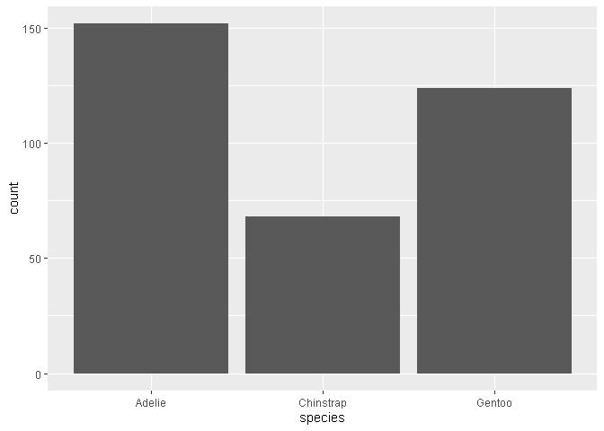
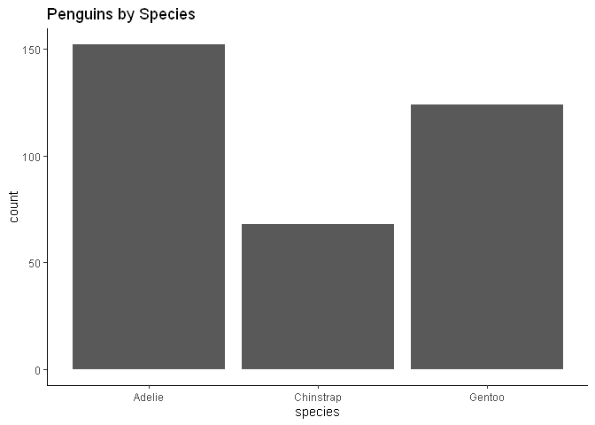
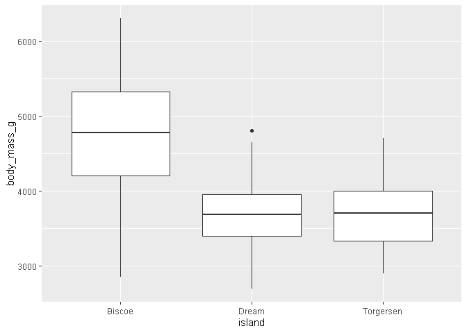
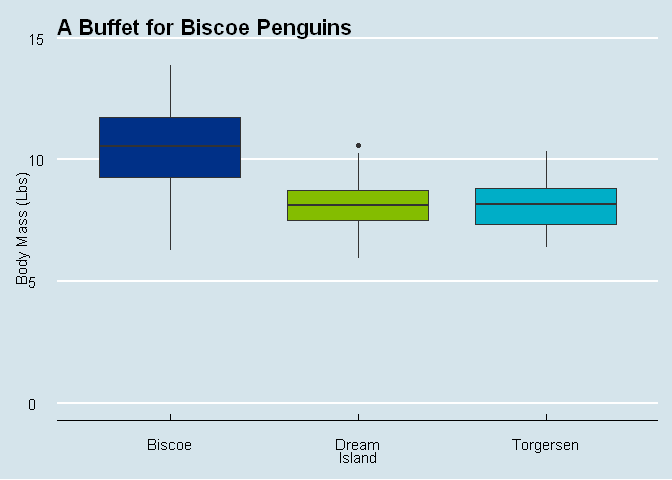
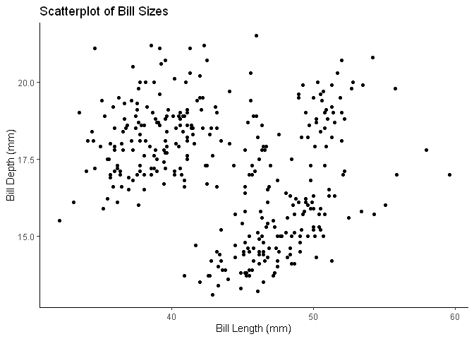
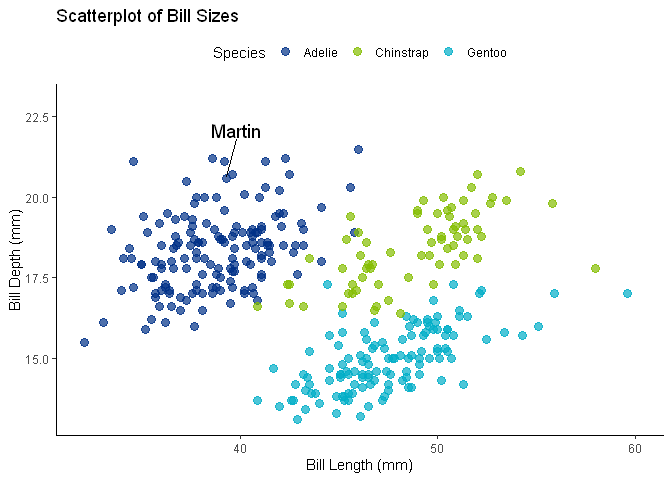
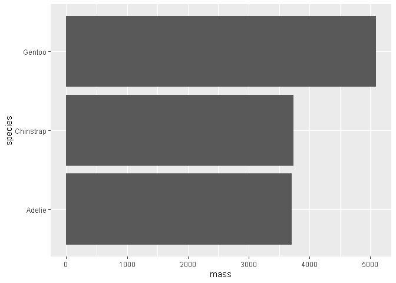
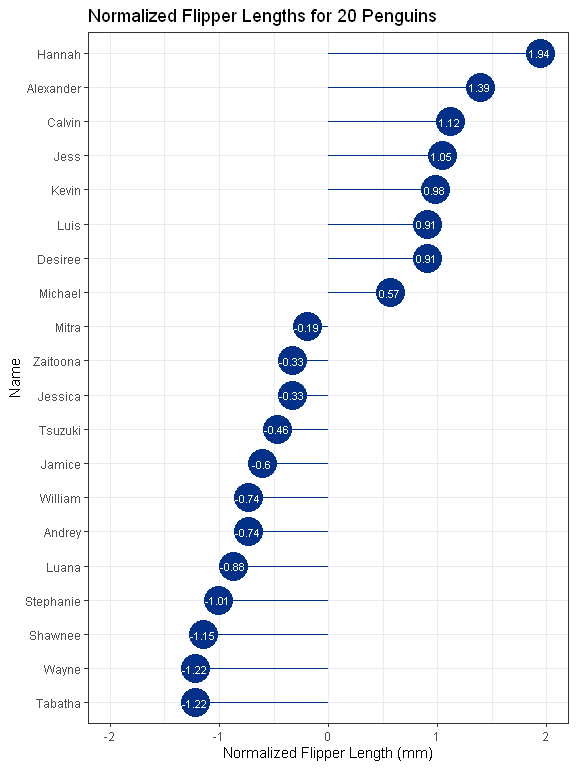
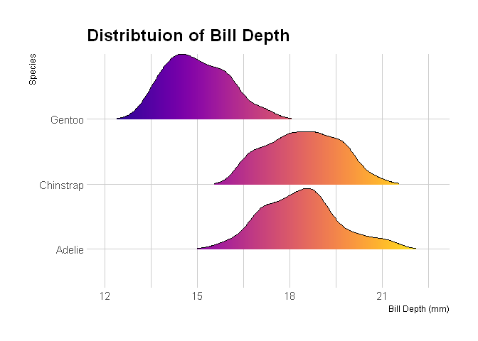
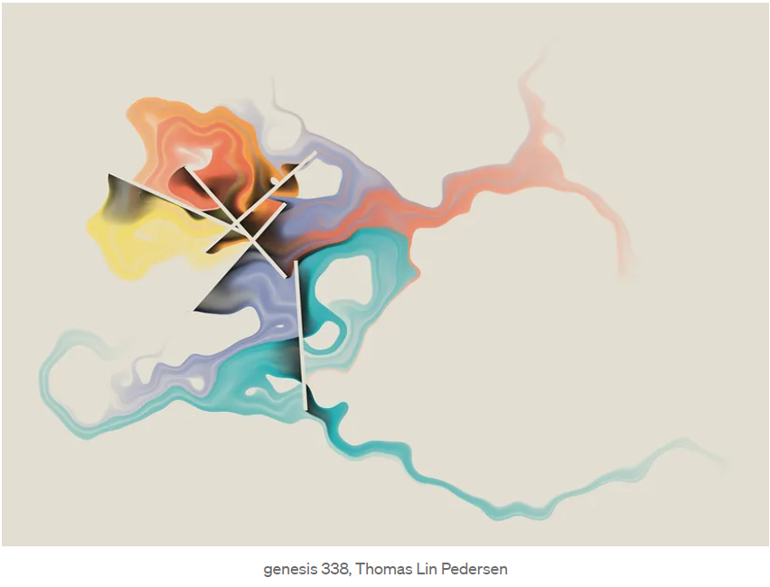

Intro
Data Visualization is a super important part of any project!
- Understand our data
- Understand what we are doing to the data
- Check our work
Today’s agenda
- Answer questions with data viz
- Explore what R has to offer
- Look at some other R visualizations
First steps
Let’s see what this data looks like:
head(penguins)
# A tibble: 6 × 8
species island bill_length_mm bill_depth_mm flipper_length_mm body_mass_g
<fct> <fct> <dbl> <dbl> <int> <int>
1 Adelie Torgersen 39.1 18.7 181 3750
2 Adelie Torgersen 39.5 17.4 186 3800
3 Adelie Torgersen 40.3 18 195 3250
4 Adelie Torgersen NA NA NA NA
5 Adelie Torgersen 36.7 19.3 193 3450
6 Adelie Torgersen 39.3 20.6 190 3650
# ℹ 2 more variables: sex <fct>, year <int>
How big is it?
dim(penguins)
[1] 344 8
Let’s get plotting!
Some questions:
- How many penguins are in each species
- How does weight differ by island?
- How are bill length and bill depth related?
We’ll use ggplot (ggplot2)
How many penguins are in each species?
ggplot(data = penguins, mapping = aes(x = species)) +
geom_bar()

How many penguins are in each species?
Goals
- Add a title
- Make it look a little nicer
ggplot(data = penguins) +
geom_bar(aes(x = species)) +
# add a title
labs(title = "Penguins by Species") +
# make it look a little nicer
theme_classic()

How does weight differ by island?
penguins %>%
ggplot() +
geom_boxplot(aes(x = island, y = body_mass_g))

How does weight differ by island?
Goals
- Add some axis labels and a title
- Change to pounds
- Make sure 0 is included in y scale
- Add some color – let’s use some branded colors!
penguins %>%
ggplot() +
# change to pounds, add color
geom_boxplot(aes(x = island, y = body_mass_g * 0.00220462, fill = island)) +
# change labels and title
labs(title = "A Buffet for Biscoe Penguins",
x = "Island",
y = "Body Mass (Lbs)") +
# include 0 in scale
lims(y = c(0, 6500 * 0.00220462)) +
theme_economist() +
# specify color
scale_fill_manual(values = c("#003087", "#84BD00", "#00AEC7"), guide = "none")

How are bill length and bill depth related?
penguins %>%
ggplot() +
geom_point(aes(x = bill_length_mm, y = bill_depth_mm)) +
# change labels and title
labs(title = "Scatterplot of Bill Sizes",
x = "Bill Length (mm)",
y = "Bill Depth (mm)") +
theme_classic()

How are bill length and bill depth related?
Goals
- Color by groups
- Where is Martin?
library(ggrepel)
named_penguins %>%
ggplot() +
# add color and transparency with alpha
geom_point(aes(x = bill_length_mm, y = bill_depth_mm, color = species),
size = 3, alpha = 0.70) +
# point out Martin!
geom_text_repel(
aes(x = bill_length_mm, y = bill_depth_mm, label = highlight),
size = 5,
nudge_x = .5,
nudge_y = 1.5
) +
# change labels and title
labs(title = "Scatterplot of Bill Sizes",
x = "Bill Length (mm)",
y = "Bill Depth (mm)") +
theme_classic() +
# specify colors
scale_color_manual(values = c("#003087", "#84BD00", "#00AEC7"),
name = "Species") +
# move legend
theme(legend.position = "top")

Don’t forget about data manipulation!
-
Half of the battle is getting the data formatted correctly before you start messing around with plots.
-
It’s important to have a good foundation in data manipulation!
Remove all of the NA’s in the data
penguins_clean <- penguins %>%
na.omit()
Without
penguins_species_mean <-
summarise(group_by(.data = penguins_clean, species), mass = mean(body_mass_g))
With
penguins_species_mean <- penguins_clean %>%
group_by(species) %>%
# put comment here
summarise(mass = mean(body_mass_g))
penguins_species_mean
# A tibble: 3 × 2
species mass
<fct> <dbl>
1 Adelie 3706.
2 Chinstrap 3733.
3 Gentoo 5092.
Plot
penguins_species_mean %>%
ggplot() + geom_bar(aes(x = mass, y = species), stat = "identity")

More examples!
Lollipop Plot

Ridgeline Plot

Sankey Plot
More Abstract

Final Thoughts
- There’s tons of theory and other things to worry about during data visualization!
- Next time: More visualization in R–maps, interactivity, dashboards
- Thank you!
More Resources
- More in-depth ggplot tutorial
- Visual Communication, Stephen Few
- Soar Beyond the Dusty Shelf Report
- Most of these figures were inspired by The R Graph Gallery